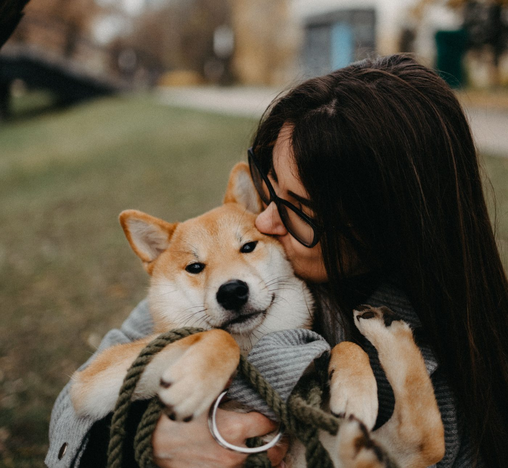
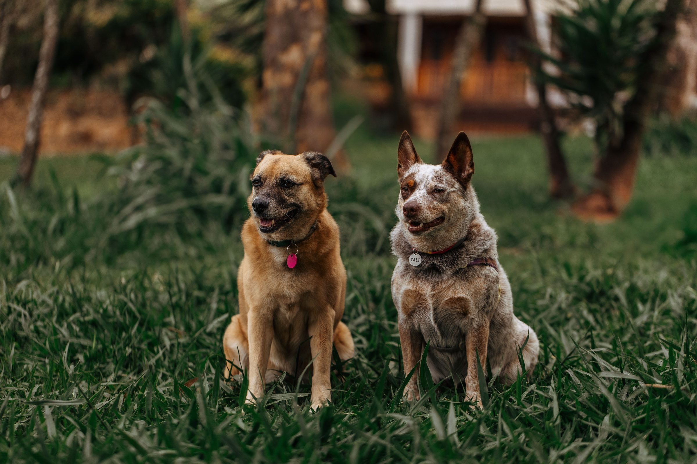
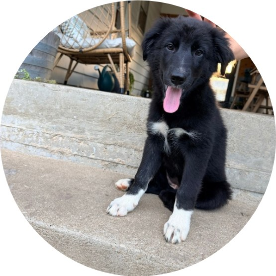

LET THEM GO
WE HANDLE THE CLEANUP

- LAWRENCE
- TOPEKA
- MANHATTAN

- STARTING AT $14.99
TEXT DOG TO (785) 600-8801

We are a local, personal dog waste removal company in Kansas. We clean up your dog’s poop so you can let them go! We offer competitive pricing while delivering premium service. Oh, and we want to know your dog’s name!

Share your address, number of dogs, and preferred service.
Aroo visits on your scheduled service day and cleans up the dog waste.
Spend less time scooping and more time with your dogs.
No. We just need safe access to the areas we’re cleaning on your service day, so leave the gate unlocked or send us access instructions. We never need to come inside your home.
Please keep dogs safely secured while we’re there, unless we’ve agreed on another arrangement with you ahead of time. Let us know about your pets and anything in the yard that could be a safety concern.
Recurring service runs on a regular scheduled visit day. Your service day, scope, and price are confirmed with you before we start.
To change, pause, or cancel your service, email hello@aroodog.com.
Pricing is agreed on before any work begins. Recurring customers are billed monthly for completed visits, with invoices typically sent at the end of each month. You can pay securely through Stripe.
Automatic payments are optional, and we’ll only charge a saved card after you’ve separately authorized it.
Severe weather or hazardous conditions can occasionally shift the schedule. We’ll do our best to let you know and set up another service date when practical, and you’re never charged for a visit we didn’t make.
Snow, ice, or standing water can also make some waste hard to reach, which may limit how complete a cleanup can be.
Ready for a cleaner yard?
Get StartedWE HANDLE THE CLEANUP

TEXT DOG TO (785) 600-8801